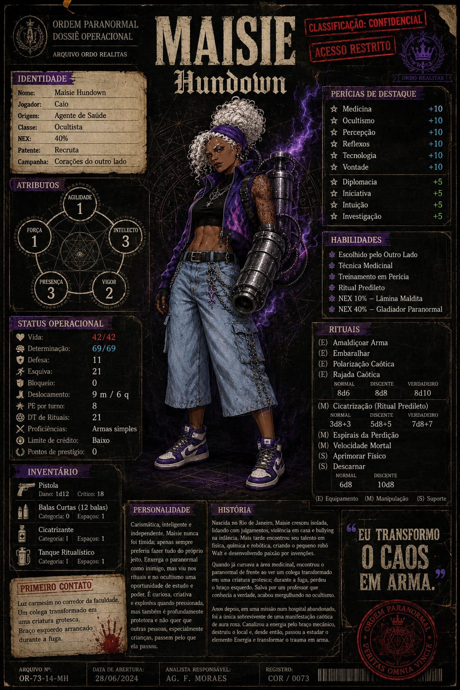

Arquivo operacional // acesso liberado
Maisie
Ocultista — NEX 40% — Recruta
Frase marcante
“Eu transformo o caos em arma”
Resumo do arquivo
Maisie Hundown é uma ocultista de perfil criativo, explosivo e altamente adaptável. Sua ligação com o paranormal nasceu do trauma, da curiosidade e da decisão de nunca mais ser apenas vítima do que viu.
Seu dossiê foi liberado para consulta pública no arquivo da campanha.
Nenhum atributo selecionado
Clique em um atributo para ver sua descrição.
Habilidades
Trilha
Nenhuma habilidade selecionada
Clique em uma habilidade ou marco da trilha para abrir a descrição.
Energia
Morte
Sangue
Resumo
- Maisie possui rituais de Energia, Morte e Sangue.
- Seu foco temático mais forte é Energia.
- Seu ritual predileto é Cicatrização.
- O conjunto reforça versatilidade, agressividade e sobrevivência.
Nenhum ritual selecionado
Clique em um ritual para abrir a descrição.
Itens registrados
Nenhum item selecionado
Clique em um item para ver a descrição.
Personalidade
Maisie é uma mulher carismática, inteligente e independente. Enquanto muitas pessoas viam o paranormal apenas como algo a temer, ela enxergou nele também uma oportunidade: entender, manipular e usar esse poder contra o próprio inimigo.
Apesar do carisma, ela não é alguém naturalmente dependente dos outros. Gosta de fazer suas coisas do próprio jeito, é criativa, curiosa e bastante intensa. Quando pressionada, pode se tornar explosiva, mas por trás disso também existe uma forte capacidade de proteção, principalmente em relação a quem ela não quer ver passando pelo mesmo sofrimento que viveu.
História
Maisie nasceu no Rio de Janeiro e passou a maior parte da infância e juventude lá. Desde cedo, preferia fazer as coisas sozinha e detestava ouvir críticas ou julgamentos sobre suas criações. Sua personalidade intensa e explosiva a colocou em conflito com outras pessoas ainda muito nova, e isso acabou piorando sua relação com o ambiente escolar e familiar.
Depois de sofrer violência em casa e anos de bullying, Maisie encontrou um ponto de apoio nas áreas de física e química. Foi aí que descobriu prazer em criar, estudar e construir. Seu primeiro grande projeto foi Walt, um pequeno robô companheiro, marcando o início do seu amor por invenções e robótica.
Mais tarde, ao perceber que a carreira de robótica não se consolidava como queria, migrou para a área medicinal. Sua vida parecia estabilizada até o paranormal atravessar tudo: numa noite de faculdade, ela encontrou no fim de um corredor uma luz carmesim e, ao investigar, viu um colega desaparecido transformado em uma criatura grotesca. Durante a fuga, perdeu o braço esquerdo antes de ser salva por um professor que conhecia a verdade sobre o Outro Lado.
A experiência não a afastou do paranormal — fez o contrário. Curiosa e determinada, Maisie exigiu respostas e começou a aprender sobre o ocultismo. Depois, já mais velha, foi recrutada para lutar contra o paranormal. Criou um braço mecânico para substituir o membro perdido e, em uma missão num hospital abandonado, foi a única sobrevivente do grupo. Encurralada por uma manifestação caótica de energia roxa, canalizou essa força através do braço mecânico e escapou ao custo de destruir o hospital.
Desde então, Maisie aprofundou seus estudos sobre Energia e transformou seu trauma em arma, adaptando o próprio corpo, o próprio estilo de luta e o próprio destino.
Galeria do arquivo
